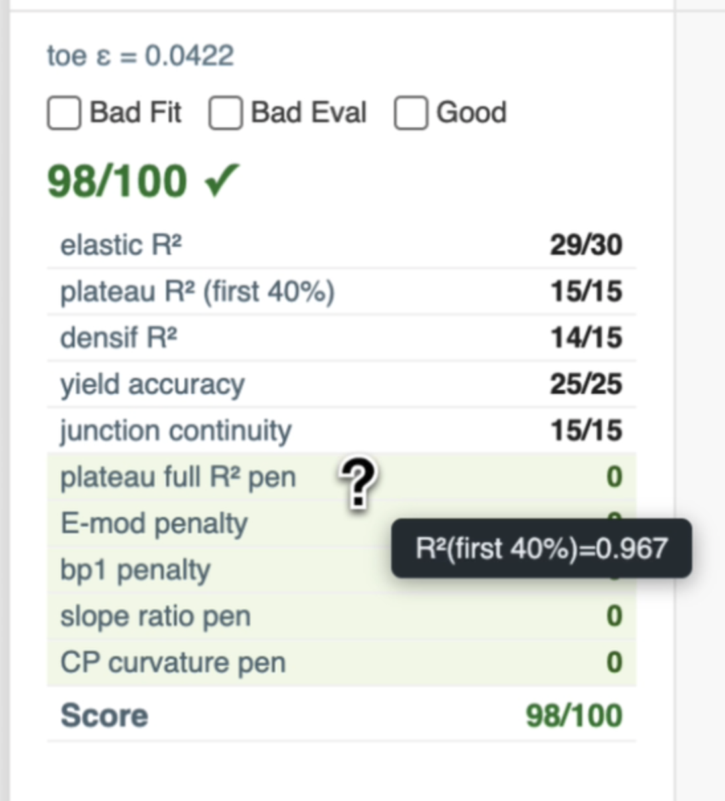

How to read these logs
Fit Evaluation Log
The compression tester is tested on multiple locations of the same membrane, which are called replicates.
Each row within a card is one replicate's processing with raw data, the spline model, and the elastic/plateau/densification segmentation overlaid on it, next to a breakdown table showing exactly how its 0-100 fit score was built up (R² per region, yield accuracy, junction continuity, penalties for suspect breakpoints). Pass threshold is 70/100.
Use the filter bar to toggle these statuses, search by condition name, or filter to only conditions with a toe-region cutoff. Click any plot to open it full size. The collapsed Average Fits section at the bottom of each card shows the fit computed on the averaged replicate curve, separately for all-replicates vs. passing-only.
What each score component means:
Hover for detail: penalty rows (the shaded ones) show a ? cursor — hover any of them to see the exact number behind the score, like the R² value that produced it:

plateau R² (first 40%) here reveals R²(first 40%)=0.967 — the same works for every row in the real log, including the zeroed-out penalty rows, so you can see exactly why a penalty did or didn't fire.Quality Evaluation Log
Each card is one condition: the pre-test membrane photo (the one actually sent to the vision LLM) next to its assessment, broken into five labeled heuristics — Presence, Vertical Coverage, Uniformity, Defects, and a one-line Summary — with the summary visually separated as the overall verdict. Only lateral (left/right) coverage is ignored by design — the test-cell aperture is intentionally oversized there, so only top/bottom gaps count as real defects.
Conditions get dropped from this log rather than shown with a caveat: a duplicate/stale photo reused across conditions, or a report generated under a retired prompt version (recognizable by outdated heuristic wording), isn't comparable to the rest and is excluded entirely.
What each heuristic means: